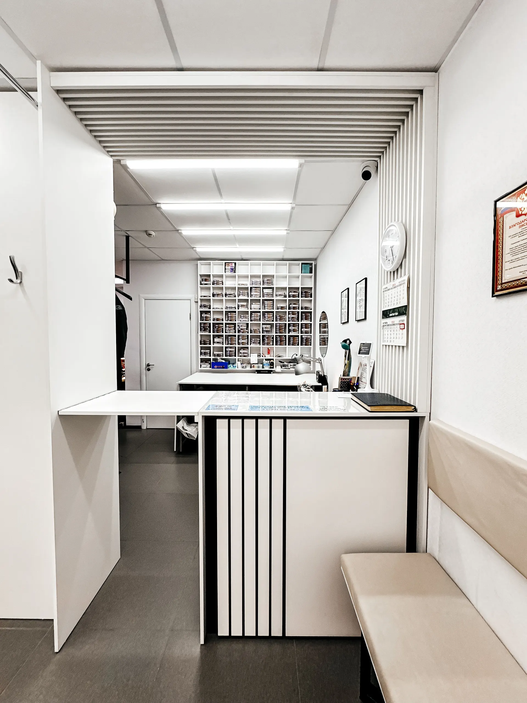
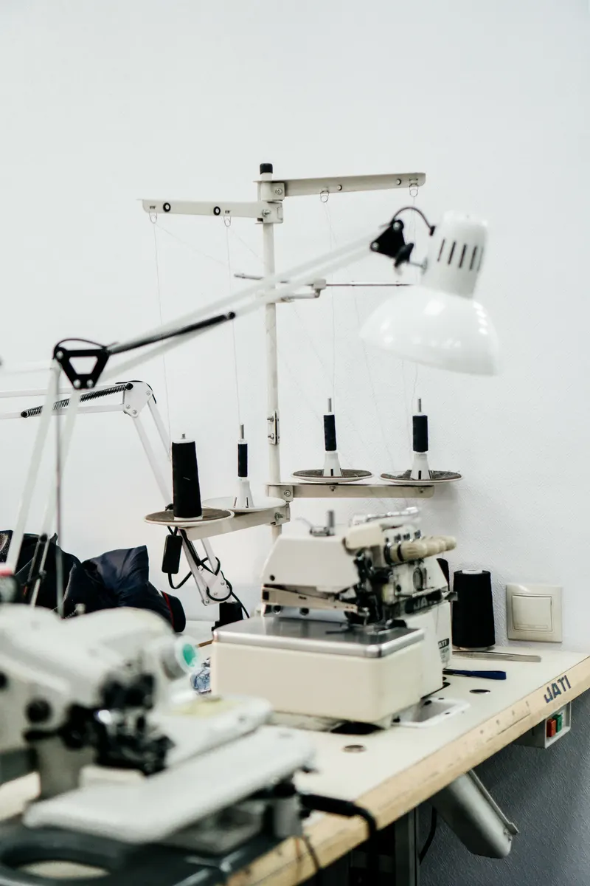
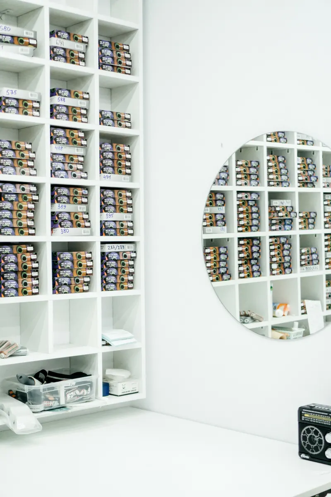
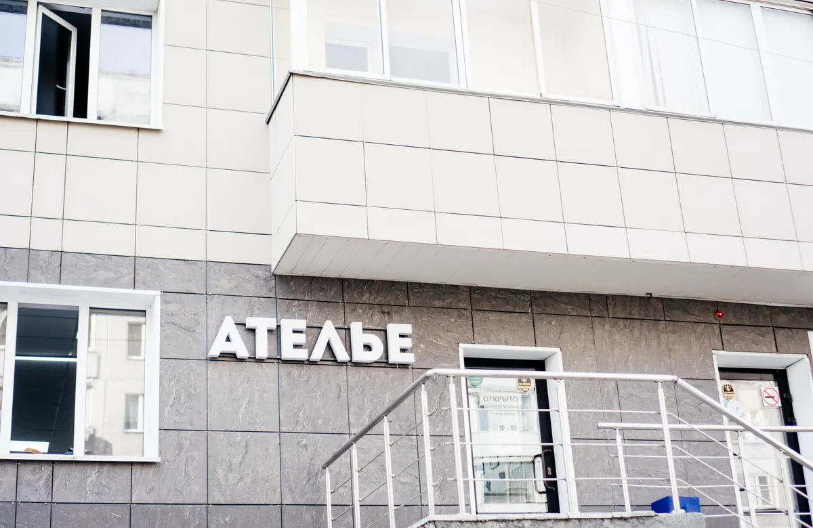

Ателье · Новосибирск
Ателье «М-Линия» в Новосибирске: ремонт и подгонка одежды, запись без звонка
Выберите услугу, день и время - чат откроется с готовым текстом. Подшить брюки, заменить молнию, отремонтировать шубу или куртку.
- Пн-чт, сб, вс 10:00-19:00
- Рейтинг 4,4, 23 оценки
- Ремонт одежды, ателье по пошиву, меховое ателье

Что ещё есть
Входит
- Ремонт одежды
- Ателье по пошиву одежды
- Меховое ателье
- Примерочная в приёмной
- Сеть ателье, несколько филиалов, по карточке
Отдельно, если нужно
- Мелкий ремонт делают за несколько часов, по отзывам
- О готовности сообщают по телефону, по отзыву клиентки
- Вежливые швеи, по отзывам
- Аккуратная работа по ремонту курток и плащей, по отзывам
- Шьют варежки из норки, по отзыву клиентки
Услуги и цены
На карточке ателье на Яндекс.Картах прайса нет, поэтому цены на этом демо показаны как «уточнить». Владелец вписывает свои цены сам - на сайте это минута.
Ремонт и подгонка
- Подшить брюки, джинсы, юбкууточнить
- Заменить молниюуточнить
- Заштопать, ушить, укоротитьуточнить
- Исправить разрыв на плаще или курткеуточнить
Мех и верхняя одежда
- Ремонт шубыуточнить
- Пошив и переделка меховых изделийуточнить
- Пошив одежды на заказуточнить
Актуальные цены уточняйте у мастеров.
Как записаться
- 01
Выберите услугу, день и время
В блоке записи вверху страницы.
- 02
Нажмите «Записаться в ателье»
Откроется чат с готовым сообщением - останется его отправить.
- 03
Принесите вещь
Мастер посмотрит, что нужно сделать, и назовёт срок.



Что говорят клиенты
Быстро
Клиентки пишут, что мелкий ремонт делали за несколько часов.
Аккуратно
Клиентки отмечают аккуратную работу с джинсами, плащами и шубами.
Вежливые мастера
Клиентки пишут про вежливых швей, которые помогают с любой мелочью.
Держат в курсе
Клиентка пишет, что о готовности сообщают по телефону.
Отзывы с Яндекс.Карт
«Очень вежливые швеи! Благодарна женщинам, которую тут работают. Несколько раз подшивала классические брюки, ушивала спортивные штаны. Работа была сделана за несколько часов.»
Галина Салгалова · 13 мая
«Замечательное ателье. Подшили ребенку дорогущие брюки качественно и быстро. Очень довольны. Теперь только сюда!»
Anna Bazhenova · 18 декабря 2025
«Очень аккуратно скорректировали разрывы плаща у карманов, выглядит как будто так и было. Я бы так не смогла.»
Нася Нася · 14 мая 2023
Отзывы с карточки на Яндекс.Картах, без правок.
Частые вопросы
Где находится ателье?
Новосибирск, улица Державина, 92/3, 1 этаж.
Как записаться?
Выберите услугу, день и время в блоке записи вверху страницы - откроется чат с готовым сообщением. Можно позвонить: +7 (960) 794-60-60.
Сколько стоит ремонт?
На карточке прайса нет, поэтому цену называют мастера после осмотра вещи.
Какие услуги есть?
По карточке: ремонт одежды, ателье по пошиву одежды и меховое ателье.
Делаете ли вы ремонт шуб и курток?
Клиентки в отзывах пишут про ремонт шубы, разрывов на плаще и замену молнии в куртке.
Сколько занимает ремонт?
Клиентка пишет, что подшивание брюк делали за несколько часов. Срок для вашей вещи называют мастера.
Работаете ли вы в выходные?
По карточке: пн-чт, сб и вс с 10:00 до 19:00. В пятницу график на карточке не указан - уточняйте по телефону.
Записаться в ателье «М-Линия»
- Адрес
- Улица Державина, 92/3, 1 этаж, Новосибирск
- Часы
- Пн-чт, сб, вс 10:00-19:00
- Телефон
- +7 (960) 794-60-60